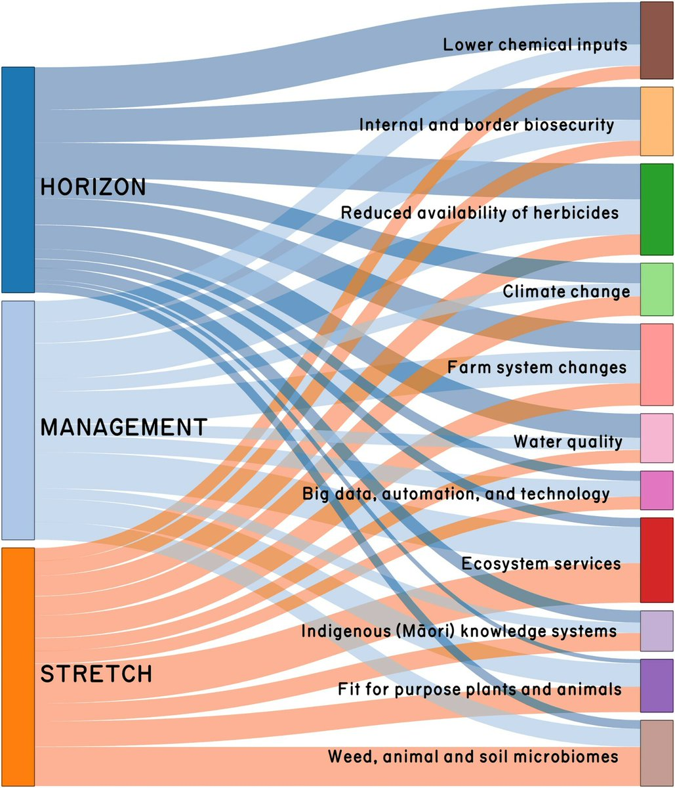

A horizon scan for pastoral weed research
This is my first post in a Quarto blog. Welcome! Here I share recent effort we made at AgResearch Ltd. via an interdisciplinary expert elicitation workshop to identify drivers of innovative weed research for the pastoral sector Buddenhagen et al. (2022). This builds on an earlier strategic more applied research document Bourdôt et al. (2018).
The main drivers we identified were ranked by participants using the criteria (1) is this a horizon (is the driver likely to become important in 10–20 years?); (2) will the research require stretchy science (is it currently not well addressed by the science community?); (3) is the research transformative (will successful scientific research in this area lead to significant changes to weed management in pastures?). We depicted the relative ranks using a nifty Sankey diagram Allaire et al. (2017) from the networkD3 package in R.

Post script
To set this blog up I followed the guidelines at quarto.org, with some nice pointers from a data witch Navarro (2022).